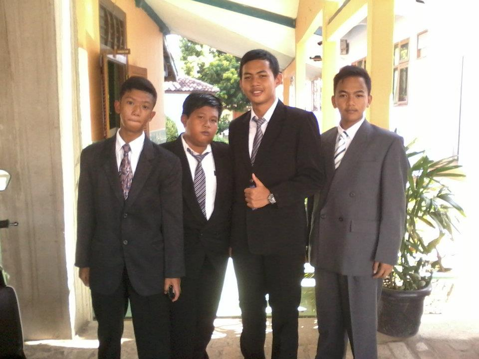
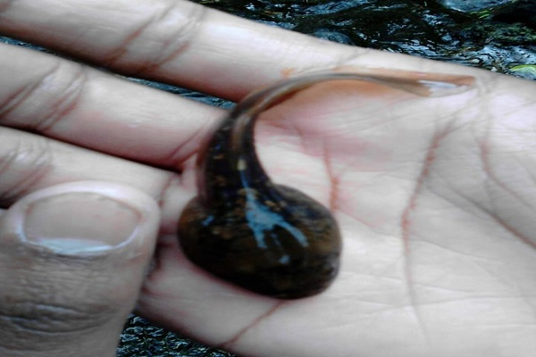

На других каменных надписях есть резьба по имени Раджа Праджадипок или также известна как титул Раджа Рамы VII, который также прибыл из королевства Таиланд. Раджа Рама VII посетил Куруг Даго в 1929 году, это видно из трудов, найденных на найденном камне. Популярность истории Королевства Таиланд в Куруг Даго восходит к 1989 году, когда человек, который посетил, обнаружил два камня возле скалы. Затем он сделал бумагу в печати, чтобы объявить об открытии. Известие об открытии сланца вызвало возбуждение толпы. С тех пор многие люди любопытны и больше исследований. В итоге возникло утверждение, что письменность на камне была написана сиамскими буквами.
На других каменных надписях есть резьба по имени Раджа Праджадипок или также известна как титул Раджа Рамы VII, который также прибыл из королевства Таиланд. Раджа Рама VII посетил Куруг Даго в 1929 году, это видно из трудов, найденных на найденном камне. Популярность истории Королевства Таиланд в Куруг Даго восходит к 1989 году, когда человек, который посетил, обнаружил два камня возле скалы. Затем он сделал бумагу в печати, чтобы объявить об открытии. Известие об открытии сланца вызвало возбуждение толпы. С тех пор многие люди любопытны и больше исследований. В итоге возникло утверждение, что письменность на камне была написана сиамскими буквами.
На других каменных надписях есть резьба по имени Раджа Праджадипок или также известна как титул Раджа Рамы VII, который также прибыл из королевства Таиланд. Раджа Рама VII посетил Куруг Даго в 1929 году, это видно из трудов, найденных на найденном камне. Популярность истории Королевства Таиланд в Куруг Даго восходит к 1989 году, когда человек, который посетил, обнаружил два камня возле скалы. Затем он сделал бумагу в печати, чтобы объявить об открытии. Известие об открытии сланца вызвало возбуждение толпы. С тех пор многие люди любопытны и больше исследований. В итоге возникло утверждение, что письменность на камне была написана сиамскими буквами